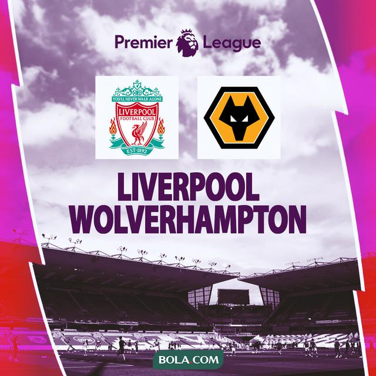

Manchester United vs West Ham, 3 Penggawa Setan Merah Bakal Absen
Manajer Manchester United, Erik Ten Hag memberikan update seputar timnya jelang menghadapi West Ham.
Ia mengonfirmasi ada tiga pemainnya yang kemungkinan besar akan absen di laga tersebut.
Liga Inggris
Manchester United vs West Ham, 3 Penggawa Setan Merah Bakal Absen
Manajer Manchester United, Erik Ten Hag memberikan update seputar timnya jelang menghadapi West Ham.
Ia mengonfirmasi ada tiga pemainnya yang kemungkinan besar akan absen di laga tersebut.
Liga Inggris
Manchester United vs West Ham, 3 Penggawa Setan Merah Bakal Absen
Manajer Manchester United, Erik Ten Hag memberikan update seputar timnya jelang menghadapi West Ham.
Ia mengonfirmasi ada tiga pemainnya yang kemungkinan besar akan absen di laga tersebut.
Liga Inggris
Manchester United vs West Ham, 3 Penggawa Setan Merah Bakal Absen
Manajer Manchester United, Erik Ten Hag memberikan update seputar timnya jelang menghadapi West Ham.
Ia mengonfirmasi ada tiga pemainnya yang kemungkinan besar akan absen di laga tersebut.
LATEST NEWS

Prediksi Pertandingan Liga Inggris, Liverpool vs Wolves: Jangan Bikin Malu Lagi The Reds!
Liverpool akan menjamu Wolverhampton di Anfield pada laga tunda pekan ke-7 Premier League 2022/2023.
Pertandingan Liga Inggris antara Liverpool vs Wolverhampton ini dijadwalkan live Kamis, 2 Maret 2023, jam 03:00 WIB.
Prediksi Timnas Indonesia U-20 Vs Irak di Piala Asia U-20 2023: Shin Tae-yong Merendah untuk Meroket
Pelatih Timnas Indonesia U-20, Shin Tae-yong beberapa kali menunjukkan rasa pesimistisnya terhadap peluang Muhammad Ferarri dkk.
di Piala Asia U-20 2023. Apa sebab?.
Liga Inggris: Pep Guardiola Sindir MU Enam Tahun Boros Cuma Menang Carabao Cup
Pep Guardiola mengolok-olok Manchester United (MU) yang dinilainya terlalu boros namun dalam enam
tahun terakhir cuma mendapatkan satu gelar, yakni Carabao Cup.